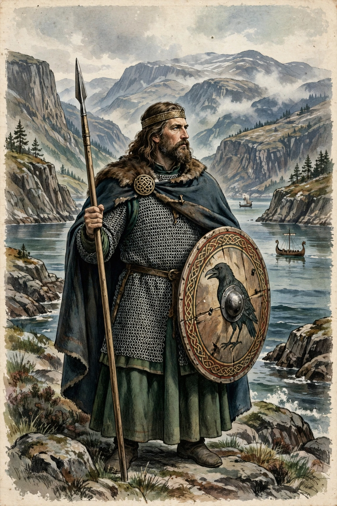

Harald Hardrada
| Harald Hardrada | |
 | |
| King of Norway | 1046 – 25 September 1066 |
|---|---|
| Born | c. 1015, Ringerike, Norway |
| Died | 25 September 1066, Stamford Bridge, England |
| Epithet | Harðráði — "hard ruler" |
Harald Sigurdsson (c. 1015 – 25 September 1066), also known as Harald Hardrada ("hard in counsel"), was King of Norway from 1046 until his death attempting to conquer England in 1066. He is often called the last great Viking king.
Exile and the Varangian Guard
Harald fought at the Battle of Stiklestad in 1030, aged about fifteen, where his half-brother King Olaf II was killed. Wounded, Harald fled east, served in Kievan Rus', and then travelled to Constantinople, where he rose to command in the Byzantine Varangian Guard, campaigning in Sicily, the Mediterranean, and possibly the Holy Land, and amassing great wealth.
King of Norway
Returning to Norway in the 1040s, Harald became co-king with his nephew Magnus the Good in 1046 and sole king after Magnus's death in 1047. His reign was marked by harsh suppression of internal opposition, church-building, the founding of Oslo, and long, largely unsuccessful wars to claim Denmark from Sweyn Estridsson, ending in peace in 1064.
Invasion of England and death
Asserting a claim to the English throne after Edward the Confessor's death, Harald invaded Northumbria in September 1066 with Tostig Godwinson, winning at Fulford. On 25 September 1066, Harold Godwinson's army surprised and defeated him at the Battle of Stamford Bridge, where Harald was killed — traditionally by an arrow to the throat. His death is often taken to mark the end of the Viking Age.
See also
Varangians · Viking activity in the British Isles · Sweyn Forkbeard
Recreated from memory as a standalone page.